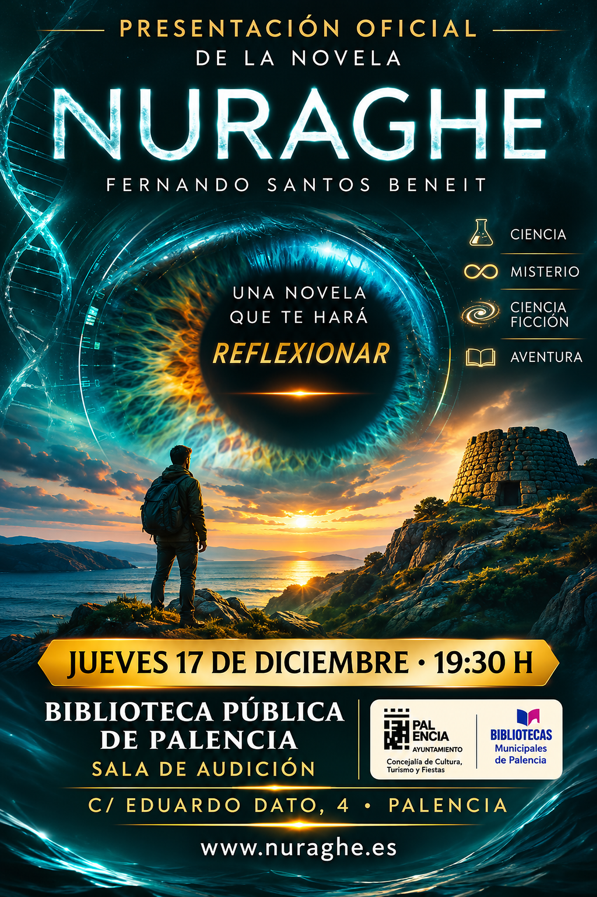

Palencia · Encuentro con los lectores
Presentación oficial de NURAGHE
Una novela de ciencia ficción que conecta la mirada de un científico con los misterios de Cerdeña y las grandes preguntas sobre el futuro de la humanidad.
- Fecha
- Hora
- Lugar
- Biblioteca Pública de Palencia
- Sala
- Sala de Audición
- Dirección
- C/ Eduardo Dato, 4 · Palencia

Ciencia, literatura y viajes
Una historia nacida en Cerdeña
Fernando Santos Beneit, doctor en Biología y especialista en bacterias productoras de antibióticos, encontró la primera inspiración para NURAGHE: El origen de una nueva humanidad durante una visita a Su Nuraxi de Barumini en 2015. Su trayectoria investigadora lo ha llevado a trabajar en España, Países Bajos, Reino Unido y Lituania.
La novela entrelaza supervivencia, genética, inteligencia artificial, naturaleza y decisiones humanas. En la web puedes conocer al autor, leer un fragmento del prólogo y ver el tráiler.
Conocer al autor y su historia